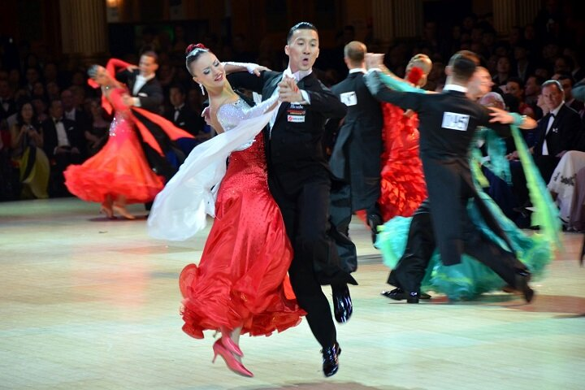

How to Build a Standard Routine 
2 May 2016
A special thanks to Zack H. for proposing this idea on .
There are three main elements to building a good Standard routine. The first is structure. This means building a rotuine that gets you around the floor easily and smoothly. The second is design. This means building a routine that shows progression, rotation, and lines. The third is musicality. This means building a routine that fits not only the beats, but also the phrasing, and captures one section of the music within one corresponding section of the rotuine. This post will explore these three elements, and help you improve on your current routines, or perhaps make new ones altogether.
Structure
Contrary to what you may have learn in your first ever Standard class, the flow of your routine should not be a large counterclockwise circle (unless it's Viennese Waltz). Rather, your routine should be approximately shaped like a dog-bone. Let's say you start in the corner, at the beginning of the long side. You should cut slightly toward the centre (but not to the other side), then travel down the LOD, then cut back toward the corner. From there, you should spend some time in the corner, then come out of the corner, move slightly toward the centre again, then travel down the short side to move into the corner, and then repeat that structure on the next long side. There are, of course, exceptions to this. Not every rotuine is structured this way, but this is the general structure of most routines.

But there is more to the structure than just where you travel. Typically, dancers travel about 3/4 down the long side before dancing any Line figures they might have, and sometimes Line figures are danced in a corner toward the audience. Getting around the corners is often handled by figures with strong rotation to the right, and then most of the travel down the sides of the room is handled by figures that progress strongly and quickly.
Design
If you watch great dancers, you will notice their dancing has soft moments and strong moments, moments when the spin, and moments when they run across the floor. Their routines are designed that way to be more beautiful, and more eye catching. Think of it like this: blue is a nice colour, but if everything is pained blue, you don't notice it. You want your rotuine to be like a coral reef. The colours in your reef will be made up of three main elements: progression, rotation, and lines.
Progression means travelling down the floor powerfully and relatively quickly. Out of all the three main elements of design, this is the most eye-catching for judges, because movement naturally attracts attention. Tall couples especially have the advantage here, because their long legs allow them to travel farther, faster, and more smoothly than others on the floor, making them stand out. The best place to show progression is down the long side of the dog bone. Here are some examples of Syllabus figures that travel a lot.
Rotation is especially important for short couples who can't show progression as well as taller couples, because strong rotation also catches the eye. At corners, figures that turn to the right (i.e. Natural figures) should be used, because by underturning them slightly it is very easy to curve around a corner. It is also common at higher levels to dance an entire short side worth of Natural rotational figures, such as pivots. In this case, you would turn the entire short side into one wide arc, and switch temporarily to the Viennese Waltz structure of the floor, as opposed to the dog bone structure. Along the side of the room, it is very popular to show figures that turn to the left (i.e. Reverse figures). Here are some examples of Syllabus figures that can show off your rotation.
| Natural Figures | |
| Waltz | Natural Spin Turn, Outside Spin, Untwist after Left Whisk |
| Tango | Natural Promenade Turn, Pivots after Oversway |
| Foxtrot | N/A |
| Quickstep | Natural Spin Turn, Running Right Turn, Rumba Cross |
| Reverse Figures | |
| Waltz | Double Reverse Spin, Open Telemark, Fallaway Reverse and Slip Pivot |
| Tango | Oversway, Fallaway Reverse and Slip Pivot |
| Foxtrot | Fallaway Reverse and Slip Pivot |
| Quickstep | Reverse Pivot, Double Reverse Spin, Closed Telemark |
Notice above that Foxtrot does not have many rotational figures. Yes it is true, Foxtrot has figures that do technically rotate to the left or the right, but as a linear dance, the syllabus does not contain many figures with powerful rotations, such as those that would be found in the other dances.
Lines are figures where the position is held for a bar or two, used to accentuate posture and frame. Line figures are obligatory in any open level routine, but they aren't as visible in the syllabus, often because dancers aren't allowed to hold the position for as long. These figures are either blatantly line figures, or could be danced like a line figure by increasing the shaping during the moment of the line.
| Waltz | Hesitation Change, Left Whisk, Hover Corte |
| Tango | Back Corte, Contra Check, Oversway |
| Foxtrot | Change of Direction, Natural Hover Telemark |
| Quickstep | Hover Corte |
The Hover Corte in Waltz is an especially strong Line figure, because it may be held for an additional bar of music, allowing for an increase in stretch. The Waltz Hesitation Change, Tango Back Corte, and Foxtrot Change of direction and Natural Hover Telemark are not line figures per se, but may be danced with an exaggerated shape to become like line figures.
Musicality
If you haven't read BGBB's post on Musicality and Phrasing, definitely check it out. The short and sweet of it as it applies to building a Standard routine is this: each phrase consists of eight bars of music (a bar in Waltz is 3 beats, Quickstep is 4 beats where 1 beat = 1 Quick, etc.), and each phrase should match a chunk of your routine. Furthermore, certain parts of the phrase are musically more powerful (like the first beat of the entire phrase), and so you should make them coincide with powerful steps in your routine, like step 1 of a Natural Turn in Waltz. By paying attention to phrasing, your dancing will look stronger and more beautiful without you having to try. When your dancing corresponds to the music, that is called musicality, and it's one of the most beautiful things in dance. Although there are many ways to make your dancing musical, phrasing is an easy one that you get to do ahead of time and then just enjoy the benefits of.
Most Popular Ways to Start
If you plan on making your own routine, the hardest part of any endeavour is the beginning, so here are some of the most popular figures for commencing each dance. Start with this, and from there, use the principles discussed herein and the legal follows that can be found in the technical descriptions of each figure here in our Workshop to finish designing your routine.
| Waltz | Natural Spin Turn commenced at the corner at the beginning of the long side, Man facing DW |
| Tango | Open Reverse Turn, Lady Outside, commenced near the beginning of the long side, Man facing DC |
| Foxtrot | Feather Step, commenced near the beginning of the long side, Man facing DC |
| Quickstep | Natural Spin Turn commenced at the corner at the beginning of the long side, Man facing DW |
Example Routine
Finally, here is an example of a Silver Waltz Routine, built with the foundations discussed in this post. Notice that the routine fits the dog bone shape, and that it uses figures with strong rotation to the right in the corners, and progresses smoothly down the sides of the room. There are no line figures in this routine, but if it were Gold I would certainly put a Hover Corte around 3/4 of the way down the long side. The routine also phrases well, taking two phrases to repeat from the beginning, and accentuating the first beat of the phrase with the first half of a Natural Turn.
If you plan on using this routine, realize that the distance you cover with one figure may be more or less than the distance someone else travels. With that, and the size of the floor in mind, know that you may need to adjust this routine to fit your dancing.
The alignments given are the commencing alignments for the Man.
| Figure | Alignment | Timing & Phrasing |
| Commence at the beginning of the long side | ||
| Natural Spin Turn | Facing DW | 1 2 3 2 2 3 |
| 4-6 Reverse Turn | Backing DC | 3 2 3 |
| Double Reverse Spin | Facing LOD | 4 2 3 |
| Progressive Chasse to R | Facing LOD | 5 2 & 3 |
| Back Lock | Backing DW | 6 2 & 3 |
| Back Whisk, turned to R | Backing DW | 7 2 3 |
| Chasse from PP | Moving down LOD | 8 2 & 3 |
| 1-3 Natural Turn | Facing DW | 1 2 3 |
| Open Impetus | Backing LOD | 2 2 3 |
| You are now in the corner, at the end of the first long side | ||
| Weave from PP | Moving new DC | 3 2 3 4 2 3 |
| Wing from PP | Facing LOD | 5 2 3 |
| Progressive Chasse to R | Facing LOD | 6 2 & 3 |
| Back Locks | Backing DW | 7 2 & 3 |
| Outside Spin | Backing DW | 8 2 3 |
| You are now in the corner, at the end of the short side, ready to repeat from the beginning | ||